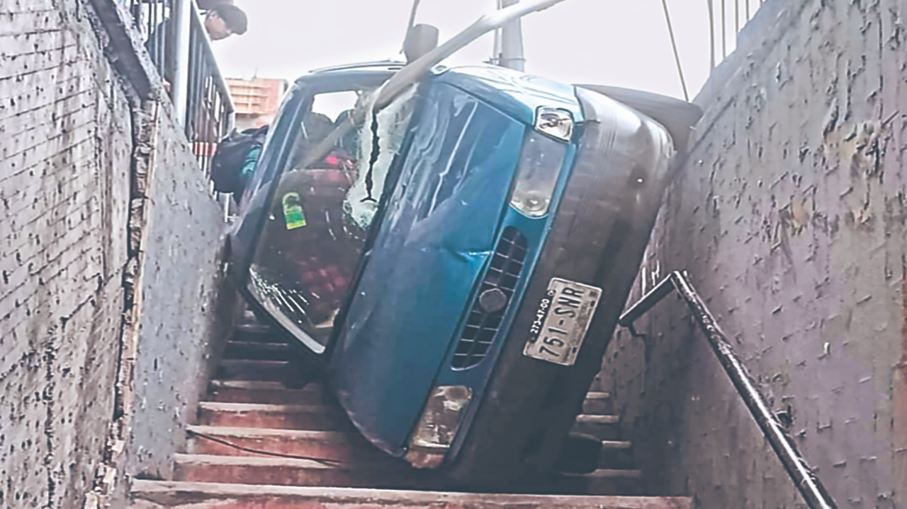
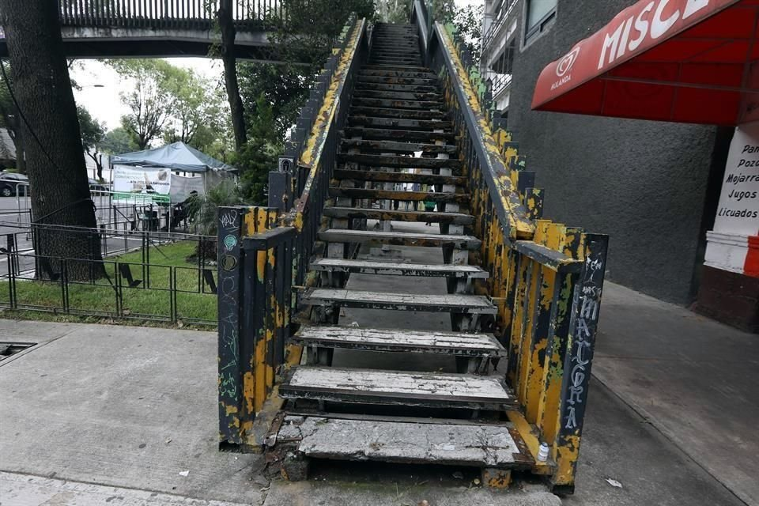
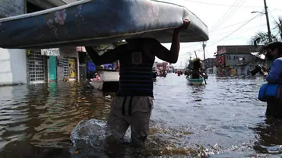
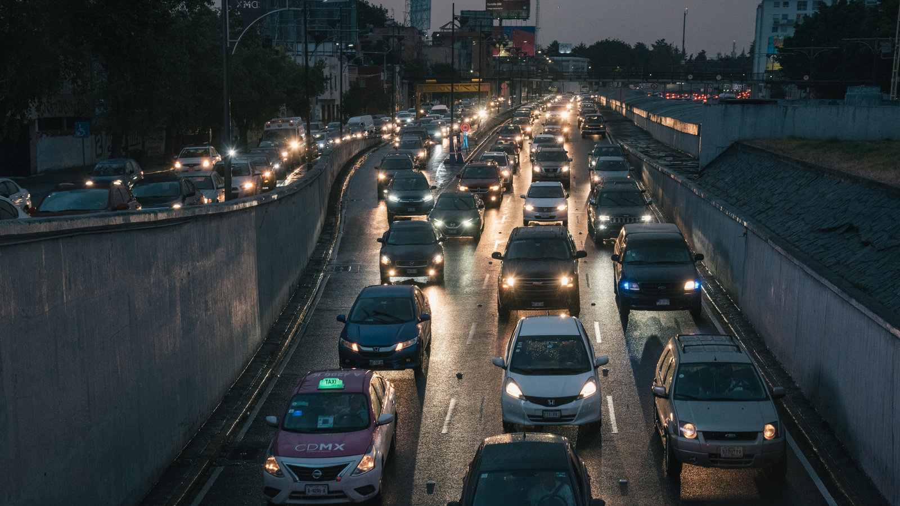

La falta de infraestructura para los pateones en CDMX.
Inseguridad

Caminar diariamente en la Ciudad de México implica enfrentarse a banquetas en mal estado, cruces inseguros y al constante riesgo de acoso o violencia. Para muchas mujeres, la caminata no es un acto libre sino una rutina condicionada por el miedo, el tiempo y la precariedad urbana. Así, la inseguridad peatonal refleja las desigualdades profundas de una ciudad pensada más para los autos que para las personas.
Infraestructura

La infraestructura peatonal en la Ciudad de México es insuficiente: solo una parte de las calles cuenta con banquetas continuas, rampas o cruces seguros. Muchas aceras están invadidas, rotas o bloqueadas, lo que obliga a peatones a caminar por la calle. Esta precariedad expone a las personas a accidentes y a una movilidad desigual.
Clima

El clima también influye en la caminata diaria en la CDMX: la falta de sombra o techumbres hace que el calor extremo desgaste más a los peatones, mientras que en temporada de lluvias las banquetas en mal estado se inundan y vuelven peligrosos los trayectos. Estos factores climáticos, combinados con infraestructura deficiente, limitan la movilidad segura y cómoda de quienes dependen de caminar.
Tiempo

El tiempo de traslado es uno de los mayores retos para los peatones en la CDMX: muchas personas caminan largas distancias hasta llegar al transporte público, lo que incrementa sus recorridos diarios. Esto significa que pueden invertir horas solo en llegar y volver del trabajo, reduciendo su descanso y calidad de vida. Así, caminar se convierte en una necesidad marcada por la desigualdad del tiempo urbano.